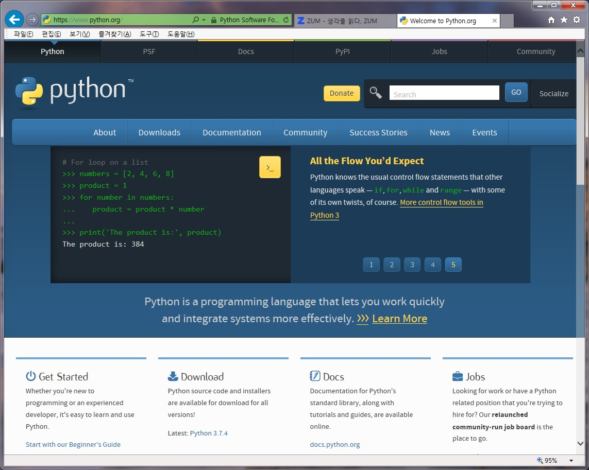

작성자: Sobaek (2019.9~)
Hello everybody!!

이 사이트는 HTML 기초문법과 웹서버 구축을 공부하기 위해서 만들었습니다.
구축된 내용은 "파이썬 프로그래밍 공부하기" 입니다.
- 파이썬 Tool 설치하기
- 숫자형 다루기
- 리스트 다루기
- 반복구조 다루기
- 조건 판단하기
- 조건으로 반복하기
- 튜플과 딕셔너리 활용하기
- 함수 사용하기
<파이썬 Tool 설치하기>
- 웹 브라우저로 아래 파이썬 웹사이트에 접속한다.
https://www/python.org

- Download 탭을 선택하고 가장 최신 버전을 다운 받는다.
- 내려 받은 python-3.x.x 파일을 더블클릭해서 실행한 다음 "Add python 3.6 to PATH"를 체크한다.
- Install Now를 클릭한다.
--> 프로그램이 설치된다.
- "Setup was successful" 화면이 나타나면 설치가 끝난 것
--> Close 버튼을 눌러 설치를 끝낸다.